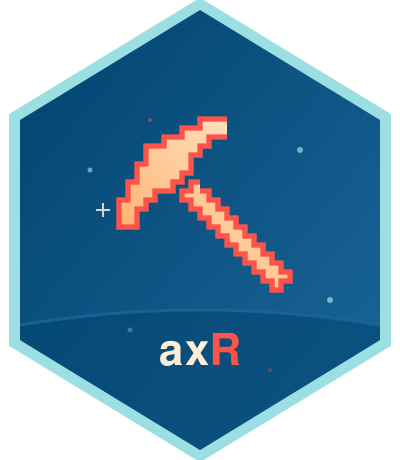

Cancel an in-progress download from an Axivity device
Source:R/download.R
axivity_download_cancel.RdCancel an in-progress download from an Axivity device
Arguments
- device_id
Integer device ID, as returned by
axivity_discover().